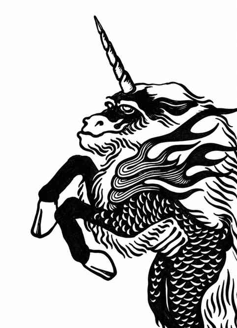
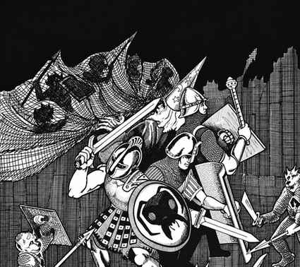
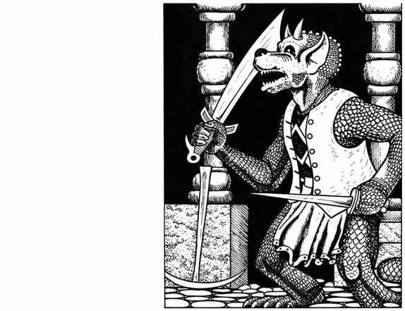

麒麟—狗头人 Ki-rin–Kobold
麒麟 Ki-rin
 |
|
麒麟是生活在云间、驾驭风的飞行生物，蹄子很少触地。不会遇到雌性麒麟；麒麟总是独自出现。若受到适当祈请，或对抗邪恶的需要十分迫切，它们有时会帮助人类。它们有时也会穿行于星界与以太位面。
麒麟可用双蹄猛击，并以一支如独角兽之角般、带有魔力的尖角（相当于 +3 武器）刺击。它也能采用其他攻击方式。麒麟可像 18 级施法者一样使用各环法术，每日可施放：一环 9 个、二环 8 个、三环 7 个、四环 6 个、五环 5 个、六环 4 个、七环 3 个、八环 2 个、九环 1 个。它们还掌握 4 项主要灵能学科与 6 项次要灵能学科，所有学科的精通等级均为 9。
麒麟每日各可使用一次以下能力：为 2–24 人创造有营养的食物；为 2–24 人创造可饮用的饮料；创造至多 32 立方尺软质物品或 18 立方尺木制物品（均永久存在）；创造重量不超过 2,000 金币的金属物品（存在时间取决于金属种类：黄金可维持 2–5 日，精金则仅维持 1 小时）；创造包含声音、影像与气味的幻象（无需专注即可持续，直到被魔法解除或有人不相信它为止）；变为气体形态；风行术；召雷术；召唤天气。
麒麟召唤天空或与空气有关的事物时，其力量加倍，包括生命值与造成的伤害。麒麟说自己的语言；凭借特殊的心灵感应交流能力，它们几乎能与任何生物交谈。
外观。 麒麟的毛色如晴日朝阳般闪耀金光，鬃毛与尾巴是较深的金色，角与蹄呈金粉色，双眼为紫罗兰色。若麒麟皮毛完整无损，价值 25,000 金币。
狗头人 Kobold

 |
|
狗头人社会以氏族为基础，部落由战团组成；强大的部落统治弱小部落。它们通常居住在阴暗潮湿之处，例如荒芜的茂密森林或地下环境。狗头人厌恶明亮阳光，在强光下视力很差；夜视极佳，并具有可达 60 尺的红外视觉。在明亮阳光下，它们的战斗能力下降，攻击生命骰减 1。
每遇到 40 只狗头人，就会有一名首领和两名护卫；其能力相当于地精首领与护卫：每只生命值 4、护甲等级 6，伤害 1–6。若在巢穴中遇到 200 只以上狗头人，还会有 5–20 名上述护卫、数量相当于总数 50% 的雌性狗头人、相当于总数 10% 的幼崽，以及 30–300 枚蛋。每个狗头人巢穴中总有一名首领及其贴身护卫。巢穴中还有 65% 概率出现 2–5 头野猪（70%）或 1–4 只巨型鼬鼠（30%），作为守卫。
狗头人部队通常按下表配备武器：
| 武器 | 概率 |
|---|---|
| 短剑与标枪 | 5% |
| 短剑与长矛 | 10% |
| 短剑 | 10% |
| 斧 | 20% |
| 带刺木棒 | 30% |
| 2–3 支标枪 | 15% |
| 长矛 | 10% |
首领与护卫总是装备可获得的最佳武器。所有狗头人盾牌均由木头或柳条制成。
狗头人憎恨大多数其他生物，喜欢杀戮与折磨；它们尤其憎恨棕仙、皮克精、精灵与侏儒，会不断与侏儒交战并一见面就发动攻击。除守序邪恶语与狗头人语外，它们通常（75%）还会说地精语与兽人语。
外观。 狗头人的皮肤从深锈褐色到锈黑色不等，没有毛发；眼睛泛红，小角则从棕褐色到白色。它们偏爱红色或橙色服饰，寿命最长可达 135 年。